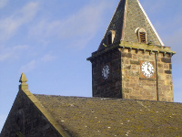
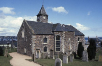

About
Unused as a church for over twenty years, Tayport Auld Kirk, with its distinctive leaning clock tower, is one of the best known landmarks in the area. It has been recognised by Historic Scotland as a “B” listed building, together with its unique graveyard.

The Auld Kirk Charitable Trust, was constituted as a charity in 2003 in order to bring the building into new uses, in a sustainable plan for the future. The Auld Kirk will be a centre for cultural, social, heritage and educational purposes, and has already hosted several music, arts, and social history events.
The Auld Kirk Charitable Trust is the successor to the Trust Fund which was established when the congregation merged with the church in Queen Street to form Tayport’s Parish Church. The Trust is taking forward the task of preserving the historical features of the building as well as promoting its use for the community.

As of 2006, the Auld Kirk Charitable Trust acquired ownership of the Auld Kirk from the Church of Scotland for community use. We are seeking funding for the upkeep of the building and its refurbishment so that it can be put to the best use for the whole of Tayport. Local groups are encouraged to use the building and also to attend committee meetings.